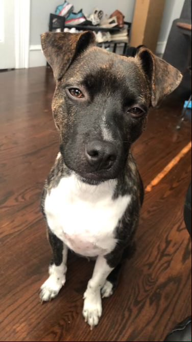
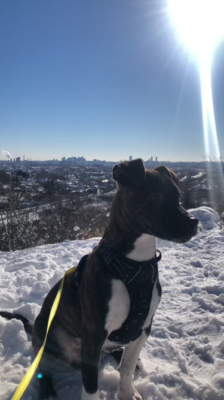
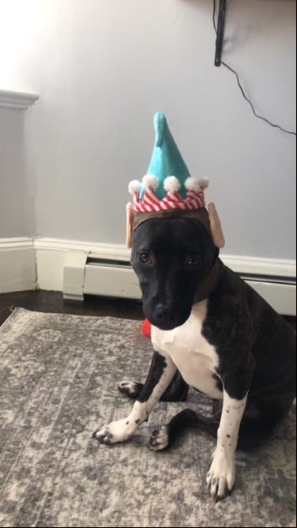
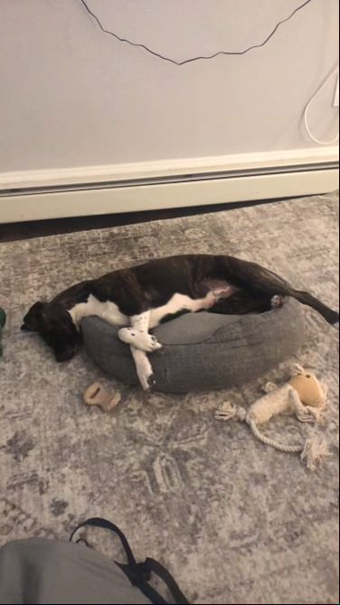
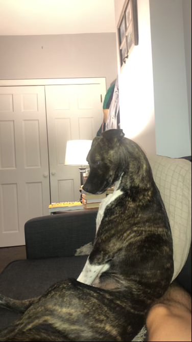

Pedro is a Sato from Puerto Rico. He is 1 year old and loves treats!
Some of his other favorite things include: walks, his dog friends,
his bed, water, the couch, the sun, his toys, our shoes, socks,
doing "paw", and napping.

Some more pictures of Pedro

This is Pedro on a hike in the snow last January.

This is Pedro wearing his Elf hat which he got as a Christmas gift.

This is Pedro taking a nap after a very long day of playing with his
friends.

This is Pedro sitting like a human. Sometimes he likes to try to talk
like a human too.
“What do dogs do on their day off? Can't lie around - that's their
job.”
- George Carlin
“If you don't own a dog, at least one, there is not necessarily
anything wrong with you, but there may be something wrong with your
life.”
- Roger A. Caras
Stay up to date on Pedro's adventures!
Sign up for our weekly newsletter. It's free and easy to sign up.